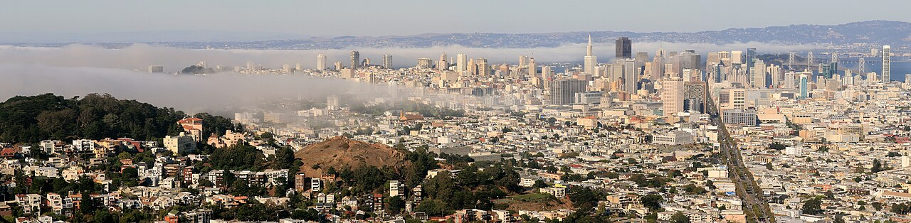
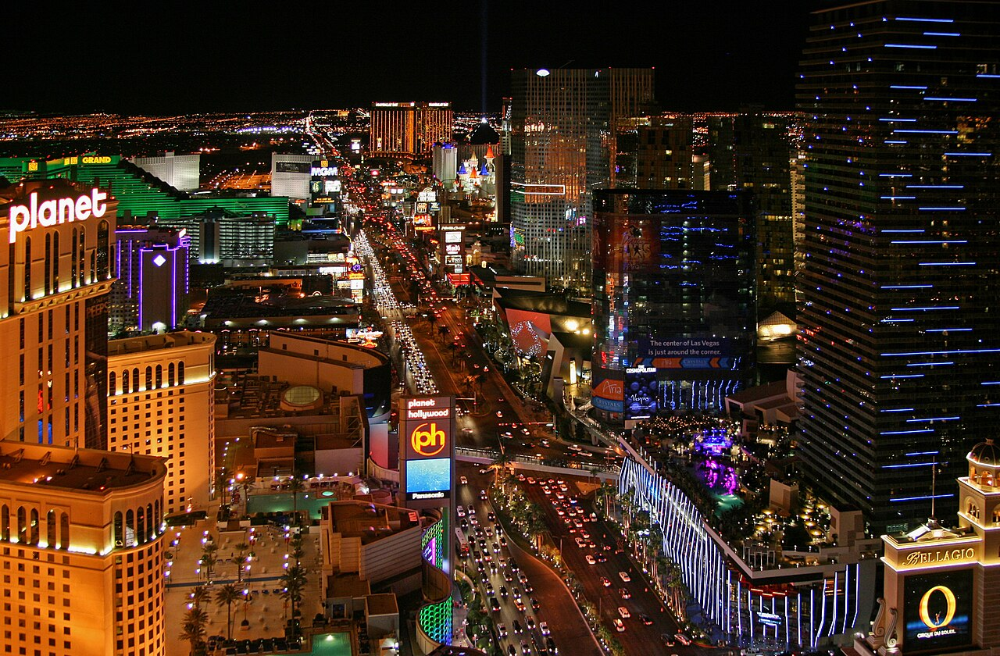
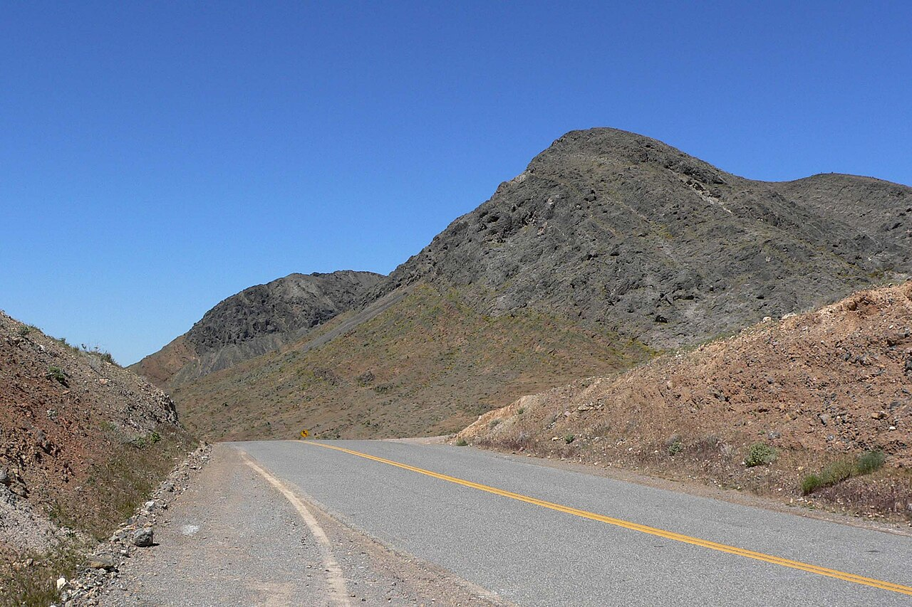
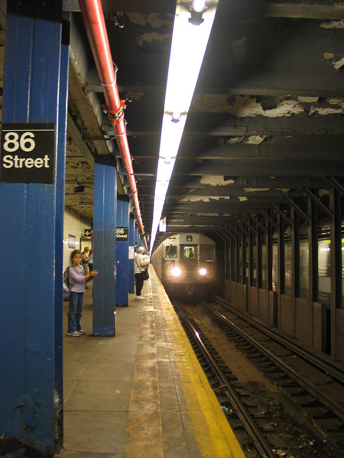
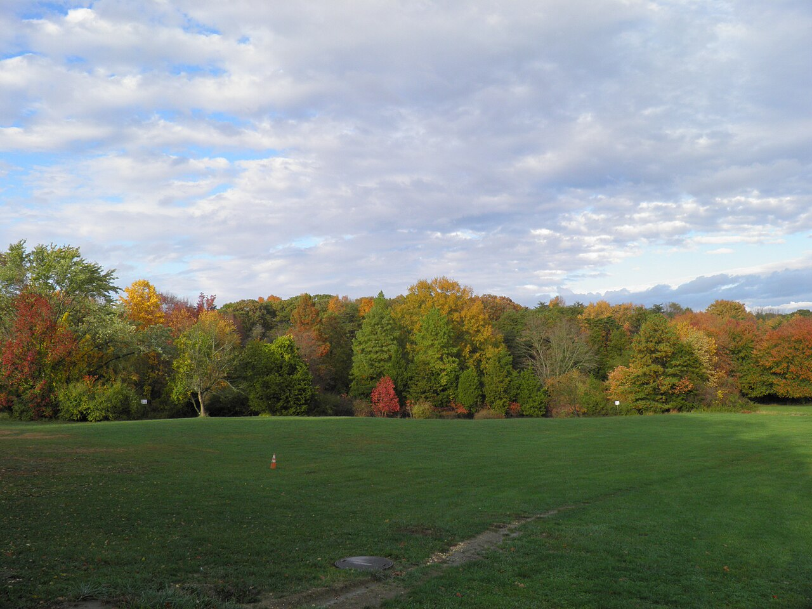
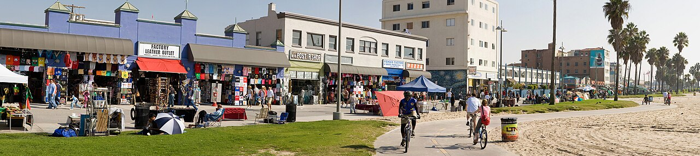

Image credits
These are real-world photos used as mood and place references. They are not GTA screenshots, official artwork, or game assets. Each image is credited to its photographer and licence.

Miami skyline 20080328
Averette · CC BY 3.0

HDR of Bridge in Florida Keys
EdoDodo · CC BY-SA 3.0

Skyline-New-York-City
Martin Dürrschnabel · Public domain

Riegelmann Boardwalk (Coney Island, New York) 003
Leonard J. DeFrancisci · CC BY-SA 4.0

Skyline of Los Angeles, Downtown Los Angeles, California 13
Levi Clancy · CC BY-SA 4.0

San Francisco with approaching fog
Brocken Inaglory · CC BY-SA 3.0

Las Vegas Strip at night, 2012
Clément Bardot · CC BY-SA 3.0

Bourbon St, French Quarter, New Orleans, USA2
Diego Delso · CC BY-SA 3.0

London Skyline from Waterloo Bridge
Diliff · CC BY-SA 3.0
Boston skyline from Cambridge November 2015 panorama 1
King of Hearts · CC BY-SA 4.0

Boulevard Hotel (Neon sign), Miami Beach
Radomianin · Public domain
Sunset behind palm trees
Benjamin D. Esham · CC BY-SA 4.0

Old Spanish Trail Highway Emigrant Pass
Stan Shebs · CC BY-SA 3.0

86st station
Daniel Schwen · CC BY-SA 3.0

GCC campus in fall
Mike Sheridan · CC BY 2.0

Rainy Night
Billie Grace Ward · CC BY 2.0

Venice Beach and Boardwalk, Los Angeles
Diliff · CC BY-SA 3.0
Everglades National Park EVER1503
National Park Service · Public domain

RKO backlot - tall hotel
Bill Wrigley · Public domain